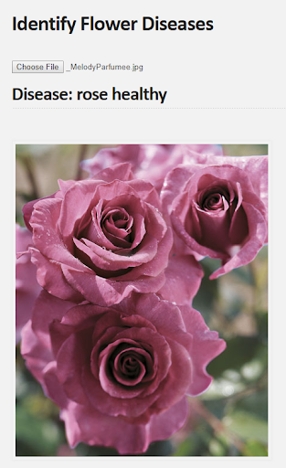
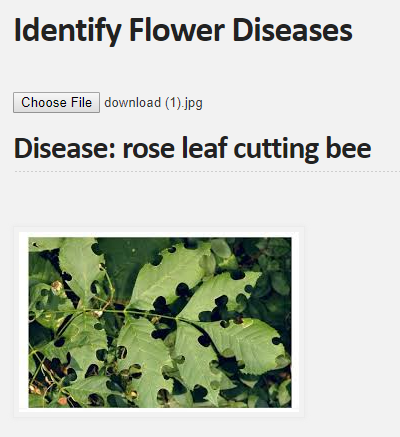
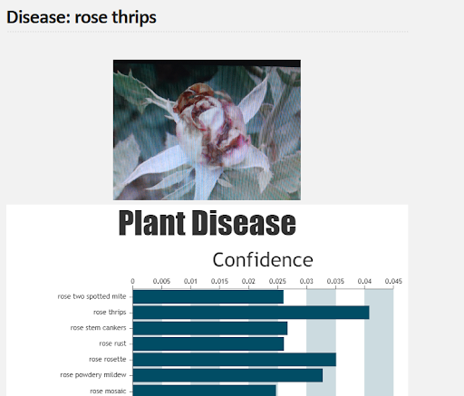

Home
Flower Disease Classification
This webapp is for identifying plant diseases.
- A user can use a webcam or upload an image.
- It uses a pretrained implementation of MobileNet to classify.
- Identifies 34 classes of disease across roses, pelargonium, and lisianthus.



Shortcuts for Fourier Networks
1. You don't need to do any more than one spectral pooling layer.
2. Half of the fourier transform is redundant! If only train across half, you no longer need to constrain your variables to represent real spatial values.
3. Multiply all intermediate layers once it's trained.
But... what good is a network without nonlinearities
Fourier-Mellin Features
Wavelet Features
Polynormalized Layers
A Better Local Normalization
Deep-Q Learning template for any game
Processing Radar Images of Ice